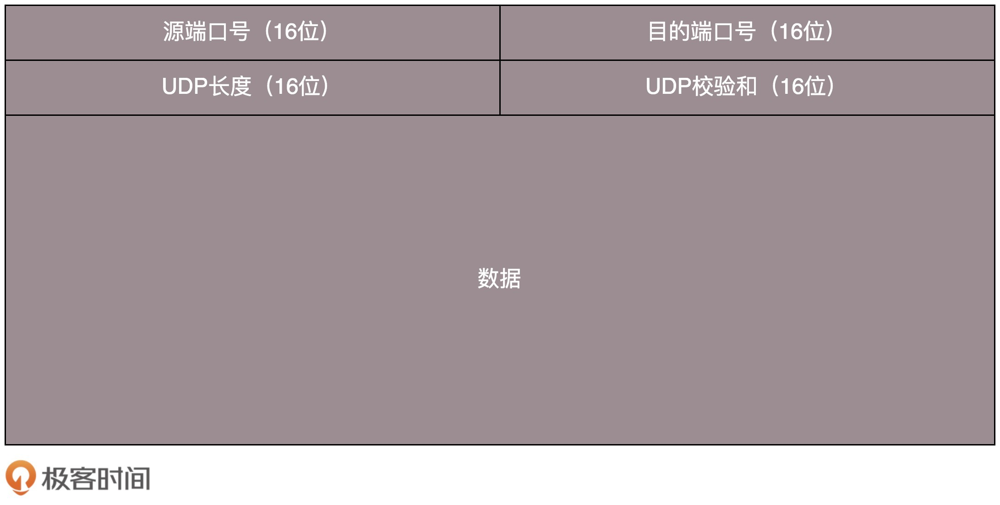

- 00 开篇词 想成为技术牛人？先搞定网络协议！.md.html
- 01 为什么要学习网络协议？.md.html
- 02 网络分层的真实含义是什么？.md.html
- 03 ifconfig：最熟悉又陌生的命令行.md.html
- 04 DHCP与PXE：IP是怎么来的，又是怎么没的？.md.html
- 05 从物理层到MAC层：如何在宿舍里自己组网玩联机游戏？.md.html
- 06 交换机与VLAN：办公室太复杂，我要回学校.md.html
- 07 ICMP与ping：投石问路的侦察兵.md.html
- 08 世界这么大，我想出网关：欧洲十国游与玄奘西行.md.html
- 09 路由协议：西出网关无故人，敢问路在何方.md.html
- 10 UDP协议：因性善而简单，难免碰到“城会玩”.md.html
- 11 TCP协议（上）：因性恶而复杂，先恶后善反轻松.md.html
- 12 TCP协议（下）：西行必定多妖孽，恒心智慧消磨难.md.html
- 13 套接字Socket：Talk is cheap, show me the code.md.html
- 14 HTTP协议：看个新闻原来这么麻烦.md.html
- 15 HTTPS协议：点外卖的过程原来这么复杂.md.html
- 16 流媒体协议：如何在直播里看到美女帅哥？.md.html
- 17 P2P协议：我下小电影，99%急死你.md.html
- 18 DNS协议：网络世界的地址簿.md.html
- 19 HttpDNS：网络世界的地址簿也会指错路.md.html
- 20 CDN：你去小卖部取过快递么？.md.html
- 21 数据中心：我是开发商，自己拿地盖别墅.md.html
- 22 VPN：朝中有人好做官.md.html
- 23 移动网络：去巴塞罗那，手机也上不了脸书.md.html
- 24 云中网络：自己拿地成本高，购买公寓更灵活.md.html
- 25 软件定义网络：共享基础设施的小区物业管理办法.md.html
- 26 云中的网络安全：虽然不是土豪，也需要基本安全和保障.md.html
- 27 云中的网络QoS：邻居疯狂下电影，我该怎么办？.md.html
- 28 云中网络的隔离GRE、VXLAN：虽然住一个小区，也要保护隐私.md.html
- 29 容器网络：来去自由的日子，不买公寓去合租.md.html
- 30 容器网络之Flannel：每人一亩三分地.md.html
- 31 容器网络之Calico：为高效说出善意的谎言.md.html
- 32 RPC协议综述：远在天边，近在眼前.md.html
- 33 基于XML的SOAP协议：不要说NBA，请说美国职业篮球联赛.md.html
- 34 基于JSON的RESTful接口协议：我不关心过程，请给我结果.md.html
- 35 二进制类RPC协议：还是叫NBA吧，总说全称多费劲.md.html
- 36 跨语言类RPC协议：交流之前，双方先来个专业术语表.md.html
- 37 知识串：用双十一的故事串起碎片的网络协议（上）.md.html
- 38 知识串：用双十一的故事串起碎片的网络协议（中）.md.html
- 39 知识串：用双十一的故事串起碎片的网络协议（下）.md.html
- 40 搭建一个网络实验环境：授人以鱼不如授人以渔.md.html
- 加餐1 创作故事：我是如何创作“趣谈网络协议”专栏的？.md.html
- 协议专栏特别福利 答疑解惑1期.md.html
- 协议专栏特别福利 答疑解惑2期.md.html
- 协议专栏特别福利 答疑解惑3期.md.html
- 协议专栏特别福利 答疑解惑4期.md.html
- 协议专栏特别福利 答疑解惑5期.md.html
- 结束语 放弃完美主义，执行力就是限时限量认真完成.md.html
- 捐赠
10 UDP协议：因性善而简单，难免碰到“城会玩”
讲完了IP层以后，接下来我们开始讲传输层。传输层里比较重要的两个协议，一个是TCP，一个是UDP。对于不从事底层开发的人员来讲，或者对于开发应用的人来讲，最常用的就是这两个协议。由于面试的时候，这两个协议经常会被放在一起问，因而我在讲的时候，也会结合着来讲。
TCP和UDP有哪些区别？
一般面试的时候我问这两个协议的区别，大部分人会回答，TCP是面向连接的，UDP是面向无连接的。
什么叫面向连接，什么叫无连接呢？在互通之前，面向连接的协议会先建立连接。例如，TCP会三次握手，而UDP不会。为什么要建立连接呢？你TCP三次握手，我UDP也可以发三个包玩玩，有什么区别吗？
所谓的建立连接，是为了在客户端和服务端维护连接，而建立一定的数据结构来维护双方交互的状态，用这样的数据结构来保证所谓的面向连接的特性。
例如，TCP提供可靠交付。通过TCP连接传输的数据，无差错、不丢失、不重复、并且按序到达。我们都知道IP包是没有任何可靠性保证的，一旦发出去，就像西天取经，走丢了、被妖怪吃了，都只能随它去。但是TCP号称能做到那个连接维护的程序做的事情，这个下两节我会详细描述。而UDP继承了IP包的特性，不保证不丢失，不保证按顺序到达。
再如，TCP是面向字节流的。发送的时候发的是一个流，没头没尾。IP包可不是一个流，而是一个个的IP包。之所以变成了流，这也是TCP自己的状态维护做的事情。而UDP继承了IP的特性，基于数据报的，一个一个地发，一个一个地收。
还有TCP是可以有拥塞控制的。它意识到包丢弃了或者网络的环境不好了，就会根据情况调整自己的行为，看看是不是发快了，要不要发慢点。UDP就不会，应用让我发，我就发，管它洪水滔天。
因而TCP其实是一个有状态服务，通俗地讲就是有脑子的，里面精确地记着发送了没有，接收到没有，发送到哪个了，应该接收哪个了，错一点儿都不行。而UDP则是无状态服务。通俗地说是没脑子的，天真无邪的，发出去就发出去了。
我们可以这样比喻，如果MAC层定义了本地局域网的传输行为，IP层定义了整个网络端到端的传输行为，这两层基本定义了这样的基因：网络传输是以包为单位的，二层叫帧，网络层叫包，传输层叫段。我们笼统地称为包。包单独传输，自行选路，在不同的设备封装解封装，不保证到达。基于这个基因，生下来的孩子UDP完全继承了这些特性，几乎没有自己的思想。
UDP包头是什么样的？
我们来看一下UDP包头。
前面章节我已经讲过包的传输过程，这里不再赘述。当我发送的UDP包到达目标机器后，发现MAC地址匹配，于是就取下来，将剩下的包传给处理IP层的代码。把IP头取下来，发现目标IP匹配，接下来呢？这里面的数据包是给谁呢？
发送的时候，我知道我发的是一个UDP的包，收到的那台机器咋知道的呢？所以在IP头里面有个8位协议，这里会存放，数据里面到底是TCP还是UDP，当然这里是UDP。于是，如果我们知道UDP头的格式，就能从数据里面，将它解析出来。解析出来以后呢？数据给谁处理呢？
处理完传输层的事情，内核的事情基本就干完了，里面的数据应该交给应用程序自己去处理，可是一台机器上跑着这么多的应用程序，应该给谁呢？
无论应用程序写的使用TCP传数据，还是UDP传数据，都要监听一个端口。正是这个端口，用来区分应用程序，要不说端口不能冲突呢。两个应用监听一个端口，到时候包给谁呀？所以，按理说，无论是TCP还是UDP包头里面应该有端口号，根据端口号，将数据交给相应的应用程序。

当我们看到UDP包头的时候，发现的确有端口号，有源端口号和目标端口号。因为是两端通信嘛，这很好理解。但是你还会发现，UDP除了端口号，再没有其他的了。和下两节要讲的TCP头比起来，这个简直简单得一塌糊涂啊！
UDP的三大特点
UDP就像小孩子一样，有以下这些特点：
第一，沟通简单，不需要一肚子花花肠子（大量的数据结构、处理逻辑、包头字段）。前提是它相信网络世界是美好的，秉承性善论，相信网络通路默认就是很容易送达的，不容易被丢弃的。
第二，轻信他人。它不会建立连接，虽然有端口号，但是监听在这个地方，谁都可以传给他数据，他也可以传给任何人数据，甚至可以同时传给多个人数据。
第三，愣头青，做事不懂权变。不知道什么时候该坚持，什么时候该退让。它不会根据网络的情况进行发包的拥塞控制，无论网络丢包丢成啥样了，它该怎么发还怎么发。
UDP的三大使用场景
基于UDP这种“小孩子”的特点，我们可以考虑在以下的场景中使用。
第一，需要资源少，在网络情况比较好的内网，或者对于丢包不敏感的应用。这很好理解，就像如果你是领导，你会让你们组刚毕业的小朋友去做一些没有那么难的项目，打一些没有那么难的客户，或者做一些失败了也能忍受的实验性项目。
我们在第四节讲的DHCP就是基于UDP协议的。一般的获取IP地址都是内网请求，而且一次获取不到IP又没事，过一会儿还有机会。我们讲过PXE可以在启动的时候自动安装操作系统，操作系统镜像的下载使用的TFTP，这个也是基于UDP协议的。在还没有操作系统的时候，客户端拥有的资源很少，不适合维护一个复杂的状态机，而且因为是内网，一般也没啥问题。
第二，不需要一对一沟通，建立连接，而是可以广播的应用。咱们小时候人都很简单，大家在班级里面，谁成绩好，谁写作好，应该表扬谁惩罚谁，谁得几个小红花都是当着全班的面讲的，公平公正公开。长大了人心复杂了，薪水、奖金要背靠背，和员工一对一沟通。
UDP的不面向连接的功能，可以使得可以承载广播或者多播的协议。DHCP就是一种广播的形式，就是基于UDP协议的，而广播包的格式前面说过了。
对于多播，我们在讲IP地址的时候，讲过一个D类地址，也即组播地址，使用这个地址，可以将包组播给一批机器。当一台机器上的某个进程想监听某个组播地址的时候，需要发送IGMP包，所在网络的路由器就能收到这个包，知道有个机器上有个进程在监听这个组播地址。当路由器收到这个组播地址的时候，会将包转发给这台机器，这样就实现了跨路由器的组播。
在后面云中网络部分，有一个协议VXLAN，也是需要用到组播，也是基于UDP协议的。
第三，需要处理速度快，时延低，可以容忍少数丢包，但是要求即便网络拥塞，也毫不退缩，一往无前的时候。记得曾国藩建立湘军的时候，专门招出生牛犊不怕虎的新兵，而不用那些“老油条”的八旗兵，就是因为八旗兵经历的事情多，遇到敌军不敢舍死忘生。
同理，UDP简单、处理速度快，不像TCP那样，操这么多的心，各种重传啊，保证顺序啊，前面的不收到，后面的没法处理啊。不然等这些事情做完了，时延早就上去了。而TCP在网络不好出现丢包的时候，拥塞控制策略会主动的退缩，降低发送速度，这就相当于本来环境就差，还自断臂膀，用户本来就卡，这下更卡了。
当前很多应用都是要求低时延的，它们可不想用TCP如此复杂的机制，而是想根据自己的场景，实现自己的可靠和连接保证。例如，如果应用自己觉得，有的包丢了就丢了，没必要重传了，就可以算了，有的比较重要，则应用自己重传，而不依赖于TCP。有的前面的包没到，后面的包到了，那就先给客户展示后面的嘛，干嘛非得等到齐了呢？如果网络不好，丢了包，那不能退缩啊，要尽快传啊，速度不能降下来啊，要挤占带宽，抢在客户失去耐心之前到达。
由于UDP十分简单，基本啥都没做，也就给了应用“城会玩”的机会。就像在和平年代，每个人应该有独立的思考和行为，应该可靠并且礼让；但是如果在战争年代，往往不太需要过于独立的思考，而需要士兵简单服从命令就可以了。
曾国藩说哪支部队需要诱敌牺牲，也就牺牲了，相当于包丢了就丢了。两军狭路相逢的时候，曾国藩说上，没有带宽也要上，这才给了曾国藩运筹帷幄，城会玩的机会。同理如果你实现的应用需要有自己的连接策略，可靠保证，时延要求，使用UDP，然后再应用层实现这些是再好不过了。
基于UDP的“城会玩”的五个例子
我列举几种“城会玩”的例子。
“城会玩”一：网页或者APP的访问
原来访问网页和手机APP都是基于HTTP协议的。HTTP协议是基于TCP的，建立连接都需要多次交互，对于时延比较大的目前主流的移动互联网来讲，建立一次连接需要的时间会比较长，然而既然是移动中，TCP可能还会断了重连，也是很耗时的。而且目前的HTTP协议，往往采取多个数据通道共享一个连接的情况，这样本来为了加快传输速度，但是TCP的严格顺序策略使得哪怕共享通道，前一个不来，后一个和前一个即便没关系，也要等着，时延也会加大。
而QUIC（全称Quick UDP Internet Connections，快速UDP互联网连接）是Google提出的一种基于UDP改进的通信协议，其目的是降低网络通信的延迟，提供更好的用户互动体验。
QUIC在应用层上，会自己实现快速连接建立、减少重传时延，自适应拥塞控制，是应用层“城会玩”的代表。这一节主要是讲UDP，QUIC我们放到应用层去讲。
“城会玩”二：流媒体的协议
现在直播比较火，直播协议多使用RTMP，这个协议我们后面的章节也会讲，而这个RTMP协议也是基于TCP的。TCP的严格顺序传输要保证前一个收到了，下一个才能确认，如果前一个收不到，下一个就算包已经收到了，在缓存里面，也需要等着。对于直播来讲，这显然是不合适的，因为老的视频帧丢了其实也就丢了，就算再传过来用户也不在意了，他们要看新的了，如果老是没来就等着，卡顿了，新的也看不了，那就会丢失客户，所以直播，实时性比较比较重要，宁可丢包，也不要卡顿的。
另外，对于丢包，其实对于视频播放来讲，有的包可以丢，有的包不能丢，因为视频的连续帧里面，有的帧重要，有的不重要，如果必须要丢包，隔几个帧丢一个，其实看视频的人不会感知，但是如果连续丢帧，就会感知了，因而在网络不好的情况下，应用希望选择性的丢帧。
还有就是当网络不好的时候，TCP协议会主动降低发送速度，这对本来当时就卡的看视频来讲是要命的，应该应用层马上重传，而不是主动让步。因而，很多直播应用，都基于UDP实现了自己的视频传输协议。
“城会玩”三：实时游戏
游戏有一个特点，就是实时性比较高。快一秒你干掉别人，慢一秒你被别人爆头，所以很多职业玩家会买非常专业的鼠标和键盘，争分夺秒。
因而，实时游戏中客户端和服务端要建立长连接，来保证实时传输。但是游戏玩家很多，服务器却不多。由于维护TCP连接需要在内核维护一些数据结构，因而一台机器能够支撑的TCP连接数目是有限的，然后UDP由于是没有连接的，在异步IO机制引入之前，常常是应对海量客户端连接的策略。
另外还是TCP的强顺序问题，对战的游戏，对网络的要求很简单，玩家通过客户端发送给服务器鼠标和键盘行走的位置，服务器会处理每个用户发送过来的所有场景，处理完再返回给客户端，客户端解析响应，渲染最新的场景展示给玩家。
如果出现一个数据包丢失，所有事情都需要停下来等待这个数据包重发。客户端会出现等待接收数据，然而玩家并不关心过期的数据，激战中卡1秒，等能动了都已经死了。
游戏对实时要求较为严格的情况下，采用自定义的可靠UDP协议，自定义重传策略，能够把丢包产生的延迟降到最低，尽量减少网络问题对游戏性造成的影响。
“城会玩”四：IoT物联网
一方面，物联网领域终端资源少，很可能只是个内存非常小的嵌入式系统，而维护TCP协议代价太大；另一方面，物联网对实时性要求也很高，而TCP还是因为上面的那些原因导致时延大。Google旗下的Nest建立Thread Group，推出了物联网通信协议Thread，就是基于UDP协议的。
“城会玩”五：移动通信领域
在4G网络里，移动流量上网的数据面对的协议GTP-U是基于UDP的。因为移动网络协议比较复杂，而GTP协议本身就包含复杂的手机上线下线的通信协议。如果基于TCP，TCP的机制就显得非常多余，这部分协议我会在后面的章节单独讲解。
小结
好了，这节就到这里了，我们来总结一下：
如果将TCP比作成熟的社会人，UDP则是头脑简单的小朋友。TCP复杂，UDP简单；TCP维护连接，UDP谁都相信；TCP会坚持知进退；UDP愣头青一个，勇往直前；
UDP虽然简单，但它有简单的用法。它可以用在环境简单、需要多播、应用层自己控制传输的地方。例如DHCP、VXLAN、QUIC等。
最后，给你留两个思考题吧。
都说TCP是面向连接的，在计算机看来，怎么样才算一个连接呢？
你知道TCP的连接是如何建立，又是如何关闭的吗？
欢迎你留言和讨论。趣谈网络协议，我们下期见！
© 2019 - 2023 Liangliang Lee. Powered by gin and hexo-theme-book.